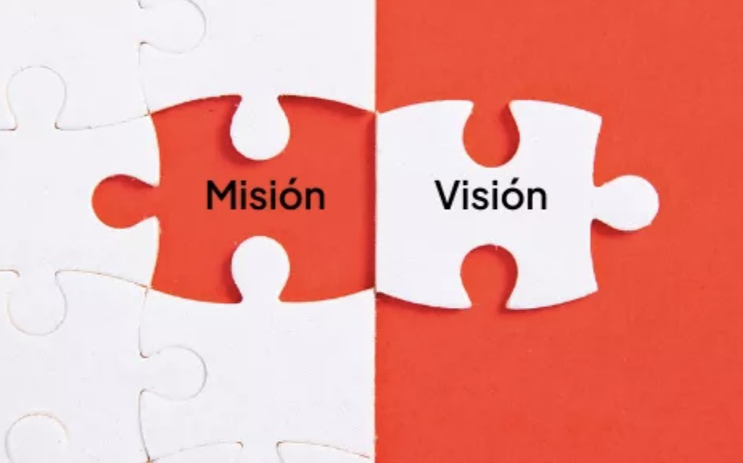
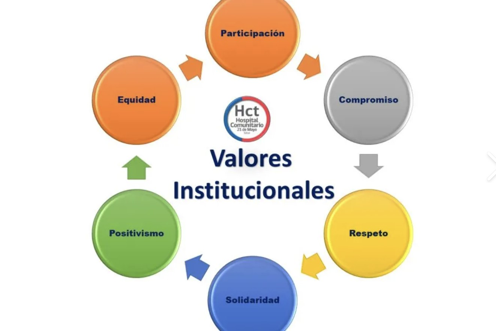

Nuestra Trayectoria y Propósito

Misión
Nuestra misión es salvaguardar y proteger la fauna silvestre de México, combatiendo de manera directa la caza furtiva y el tráfico ilegal de especies prioritarias como el jaguar, el lobo mexicano y las aves exóticas. Nos enfocamos en la vigilancia comunitaria, el rescate de ejemplares y la denuncia de los delitos ambientales.
Colaboramos estrechamente con ejidos y comunidades indígenas locales a través de comités de vigilancia participativa, promoviendo el cuidado de los ecosistemas como una fuente de orgullo y desarrollo sustentable para el país.
Visión
Aspiramos a ser el vínculo ciudadano más fuerte para erradicar el comercio ilegal de vida silvestre en México. Buscamos consolidar corredores biológicos completamente seguros y libres de trampas, impulsando un marco legal nacional más severo que castigue con rigor a los traficantes de fauna.
Visualizamos un México donde especies en peligro crítico logren recuperar sus poblaciones naturales en hábitats protegidos y respetados, asegurando que el patrimonio natural permanezca intacto para las futuras generaciones.

Nuestros Valores
Nos guían la legalidad, el respeto biocultural, la transparencia y el compromiso inquebrantable con el entorno natural. Entendemos que la conservación en México debe ser inclusiva, uniendo la investigación científica con los saberes tradicionales de los pueblos originarios que custodian la tierra.
Trabajamos de forma transparente compartiendo recursos con brigadistas comunitarios y cuerpos de inspección oficiales, garantizando que cada denuncia y esfuerzo de voluntariado se traduzca de forma equitativa en protección directa dentro de nuestras reservas naturales.